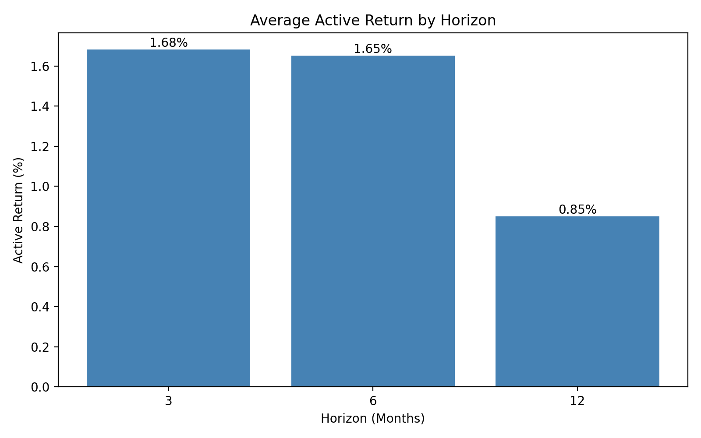
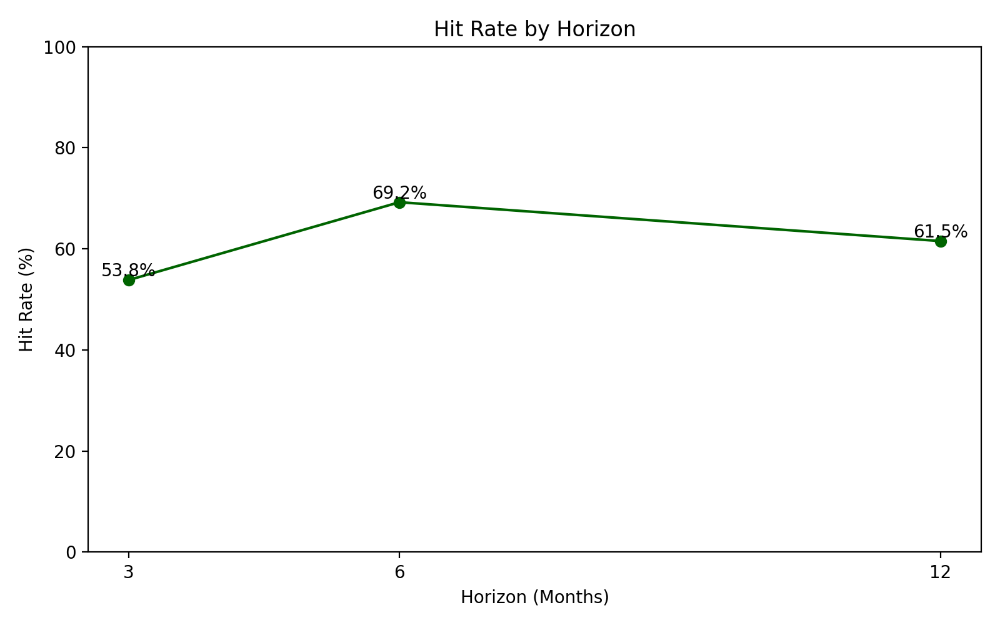
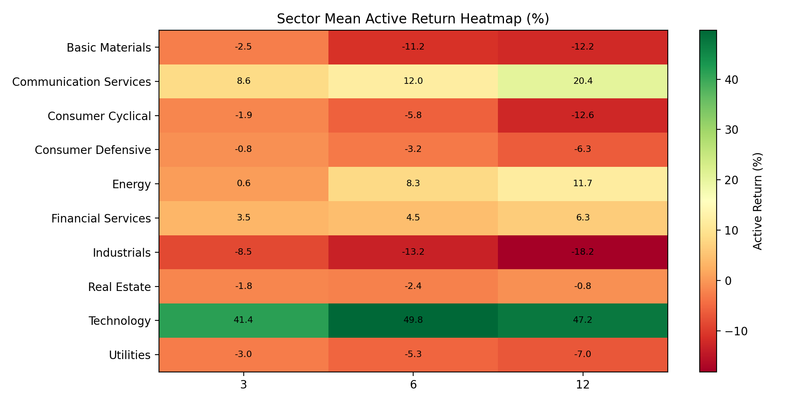
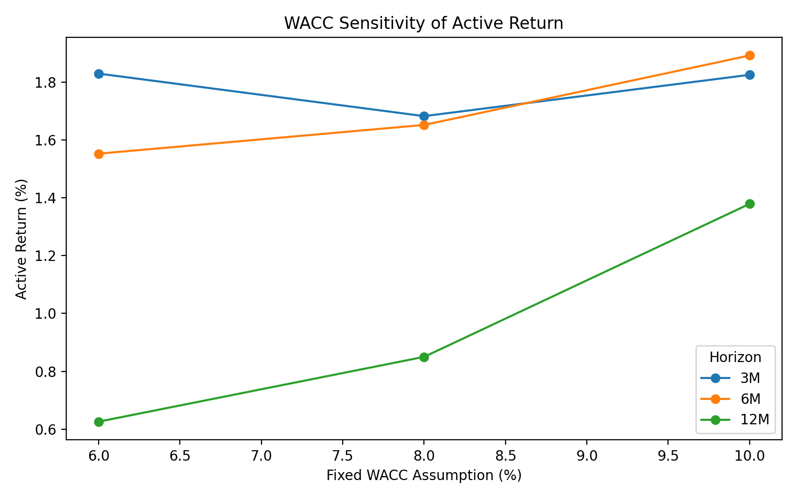

Figures
Local chart assets copied into the deploy bundle




This page packages the thesis-safe outputs: the summary table, no-lookahead status, sector dispersion, and WACC sensitivity figures copied into the static site for direct deployment.
The current implementation uses quarterly rebalancing, top-10 equal weights, benchmark-relative forward returns, and fixed WACC historical scoring. It generated 397 signals with 0 no-lookahead failures.
| Horizon | Portfolio return | Benchmark return | Active return | Hit rate |
|---|---|---|---|---|
| 3 months | 6.62% | -0.00% | 6.62% | 76.92% |
Figures




Sector dispersion
Best individual sector-horizon combinations in the appendix:
Weakest individual sector-horizon combinations in the appendix:
WACC sensitivity
| Fixed WACC | Best horizon | Best active return | Hit rate |
|---|---|---|---|
| 6% | 3 months | 1.83% | 53.85% |
| 8% | 3 months | 1.68% | 53.85% |
| 10% | 6 months | 1.89% | 69.23% |
| Horizon_Months | Portfolio_Return | Benchmark_Return | Active_Return | Hit_Rate | Observations | Avg_Turnover | Avg_Universe_Count | Avg_Excluded_Count | Case_Name | Top_N | Stop_Loss_Pct |
|---|---|---|---|---|---|---|---|---|---|---|---|
| 3 | 0.06615449834738273 | -3.3533295267861565e-05 | 0.0661880316426506 | 76.92307692307693 | 13 | 0.47692307692307695 | 50.0 | 19.46153846153846 | baseline | 5 | 0.0 |
| Sector | Horizon_Months | Mean_Forward_Return | Mean_Active_Return | Selections |
|---|---|---|---|---|
| Technology | 3 | 0.4613488860861852 | 0.4143933080968087 | 6 |
| Communication Services | 3 | 0.008649809496241901 | 0.08555921832919412 | 6 |
| Financial Services | 3 | 0.06254279334403214 | 0.03501964481556837 | 39 |
| Energy | 3 | -0.015733655520182535 | 0.005744400181557801 | 11 |
| Consumer Defensive | 3 | 0.0009854598884221273 | -0.0076710665057646375 | 11 |
| Real Estate | 3 | 0.024153817742604562 | -0.018247739350018617 | 5 |
| Consumer Cyclical | 3 | -0.025189314653763492 | -0.018759621721667986 | 23 |
| Basic Materials | 3 | -0.06544708906903332 | -0.025149119909551876 | 4 |
| Utilities | 3 | -0.019194202356364324 | -0.030336869280744912 | 11 |
| Industrials | 3 | -0.1153115758100499 | -0.08511996157678957 | 11 |
| Technology | 6 | 0.5618065975954647 | 0.4977707372300752 | 6 |
| Communication Services | 6 | 0.00615749141179945 | 0.11984876185134752 | 6 |
| Energy | 6 | 0.10319866191902628 | 0.0827691211915541 | 11 |
| Financial Services | 6 | 0.10824465292889535 | 0.045197855974583895 | 39 |
| Real Estate | 6 | 0.00971587996892042 | -0.02396183691022798 | 5 |
| Consumer Defensive | 6 | -0.029182340822185224 | -0.03215995350545988 | 11 |
| Utilities | 6 | -0.04038951880423425 | -0.05282145384514707 | 11 |
| Consumer Cyclical | 6 | -0.08548986870961162 | -0.05771235207992408 | 23 |
| Basic Materials | 6 | -0.1869448282752621 | -0.11212848602991371 | 4 |
| Industrials | 6 | -0.17650247994028534 | -0.13162690811337174 | 11 |
| Technology | 12 | 0.5375962771859402 | 0.47242170750077483 | 6 |
| Communication Services | 12 | 0.12155374553832939 | 0.20422695119797218 | 6 |
| Energy | 12 | 0.14060293112728894 | 0.11655948568594726 | 11 |
| Financial Services | 12 | 0.1609109582094794 | 0.06275720239265961 | 39 |
| Real Estate | 12 | -0.04857594065790428 | -0.00820522427983158 | 5 |
| Consumer Defensive | 12 | -0.06598096949743346 | -0.06298815177137157 | 11 |
| Utilities | 12 | -0.021053274664529897 | -0.07007439516295247 | 11 |
| Basic Materials | 12 | -0.20270559811484118 | -0.12224397738745309 | 4 |
| Consumer Cyclical | 12 | -0.17306785960440377 | -0.12578661828416268 | 23 |
| Industrials | 12 | -0.23337671163984133 | -0.18165920689605441 | 11 |
| WACC_Assumption | Horizon_Months | Portfolio_Return | Benchmark_Return | Active_Return | Hit_Rate | Observations | Backtest_Output | Signals |
|---|---|---|---|---|---|---|---|---|
| 0.06 | 3 | 0.0182537205165945 | -3.3533295267861565e-05 | 0.0182872538118624 | 53.84615384615385 | 13 | research_data/latest/backtest/sensitivity_runs/wacc_06 | 417 |
| 0.08 | 3 | 0.0167848981558767 | -3.3533295267861565e-05 | 0.0168184314511445 | 53.84615384615385 | 13 | research_data/latest/backtest/sensitivity_runs/wacc_08 | 408 |
| 0.1 | 3 | 0.0182113903055804 | -3.3533295267861565e-05 | 0.0182449236008482 | 53.84615384615385 | 13 | research_data/latest/backtest/sensitivity_runs/wacc_10 | 403 |
| 0.06 | 6 | 0.0210398486330341 | 0.0055185250468699 | 0.0155213235861641 | 69.23076923076923 | 13 | research_data/latest/backtest/sensitivity_runs/wacc_06 | 417 |
| 0.08 | 6 | 0.0220322073665474 | 0.0055185250468699 | 0.0165136823196774 | 69.23076923076923 | 13 | research_data/latest/backtest/sensitivity_runs/wacc_08 | 408 |
| 0.1 | 6 | 0.0244317357216759 | 0.0055185250468699 | 0.0189132106748059 | 69.23076923076923 | 13 | research_data/latest/backtest/sensitivity_runs/wacc_10 | 403 |
| 0.06 | 12 | 0.022051468744458 | 0.0157880276726173 | 0.0062634410718406 | 61.53846153846154 | 13 | research_data/latest/backtest/sensitivity_runs/wacc_06 | 417 |
| 0.08 | 12 | 0.0242898218941027 | 0.0157880276726173 | 0.0085017942214853 | 61.53846153846154 | 13 | research_data/latest/backtest/sensitivity_runs/wacc_08 | 408 |
| 0.1 | 12 | 0.0295740603330838 | 0.0157880276726173 | 0.0137860326604664 | 61.53846153846154 | 13 | research_data/latest/backtest/sensitivity_runs/wacc_10 | 403 |